capture/01-backup/01-entry.jpg
数据备份介绍页
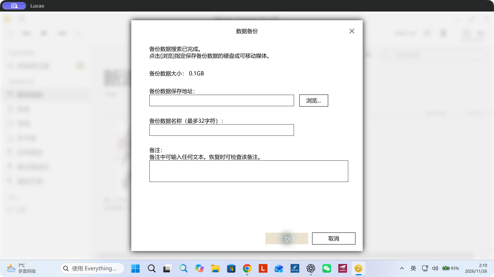
capture/01-backup/02-searching.jpg
正在搜索备份数据

capture/01-backup/03-options-empty.jpg
备份设置页，地址与名称未填写

capture/01-backup/04-options-filled.jpg
备份位置与 baseline 名称已填写，准备执行

capture/01-backup/05-ready-to-start.jpg
备份数据保存准备完成，开始写入前
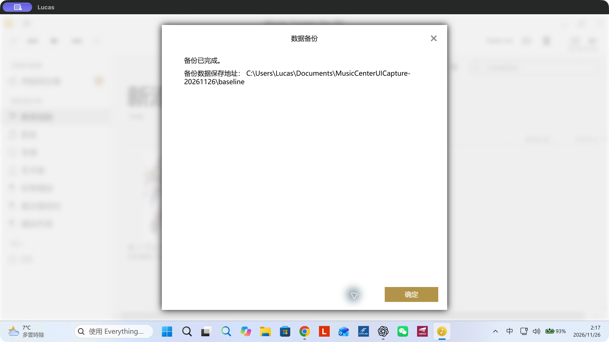
capture/01-backup/06-completed.jpg
实际备份完成及保存地址
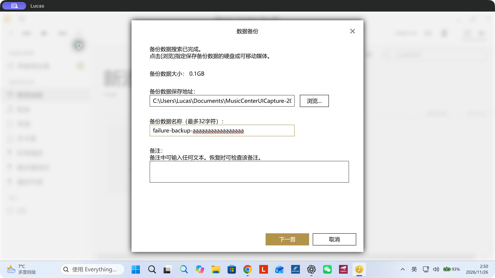
capture/01-backup/07-long-path-test-options.jpg
隔离长路径备份测试：本轮新建的 180 字符父目录及 32 字符备份名，不覆盖 baseline。
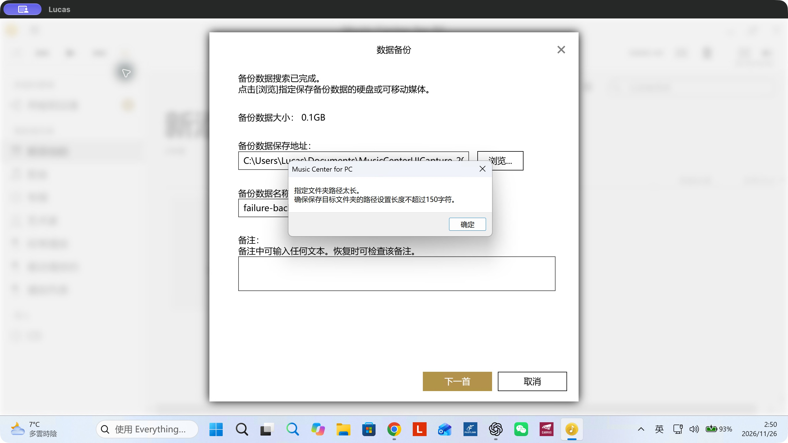
capture/01-backup/08-path-too-long-validation.jpg
路径验证失败：原版要求保存目标文件夹路径设置长度不超过150字符；未开始备份，不能当作运行中失败页。
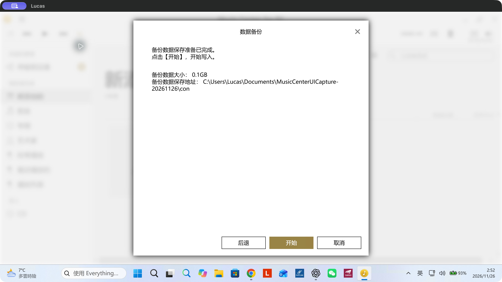
capture/01-backup/09-reserved-name-ready-to-start.jpg
Windows 保留名称 con 被原版界面接受并进入最终开始页；目标为本轮独立测试目录下的 con，尚未开始。
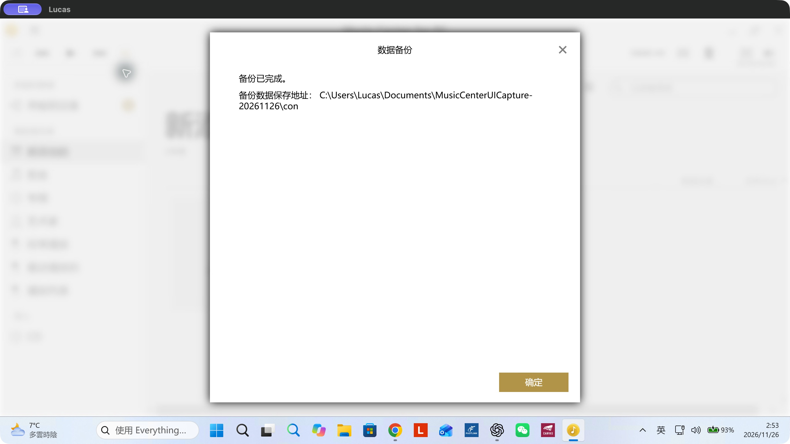
capture/01-backup/10-reserved-name-backup-completed.jpg
反例：con 名称在本机实际备份成功，不能作为失败页；保留此真实结果供后续核对。
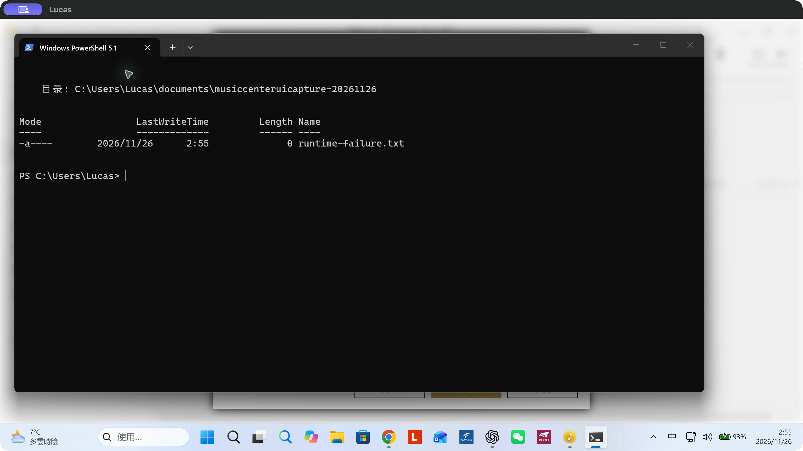
capture/01-backup/11-runtime-conflict-precondition.jpg
失败测试前置证据：仅在本轮独立目录中创建同名的零字节普通文件 runtime-failure.txt，目标路径与备份目录发生类型冲突。
capture/01-backup/12-runtime-conflict-ready-to-start.jpg
写入冲突文件已建立，备份仍停在之前通过验证的最终开始页。

capture/01-backup/13-runtime-write-failed.jpg
实际点击开始后的备份写入失败：无法写入指定文件夹。无法备份。请指定其他文件夹。背景仍为正在进行备份页；由独立零字节目标文件冲突触发。
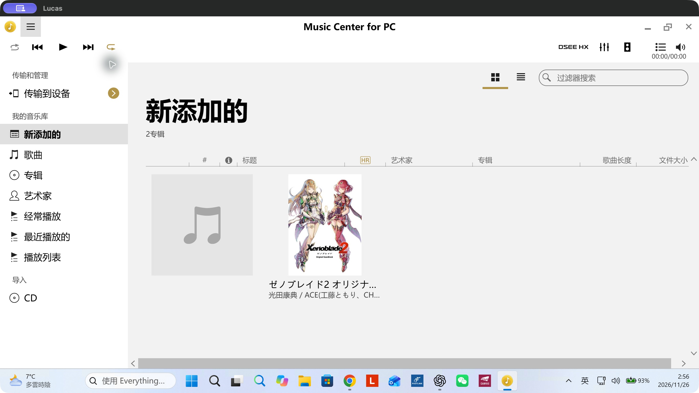
capture/01-backup/14-after-runtime-failure.jpg
确认备份运行写入失败提示后，向导关闭并返回新添加的曲库页。

capture/01-backup/15-backup-progress-100-unfilled.jpg
baseline 实际备份执行页：百分比已显示100%，金色条尚未填满，停止按钮可见。
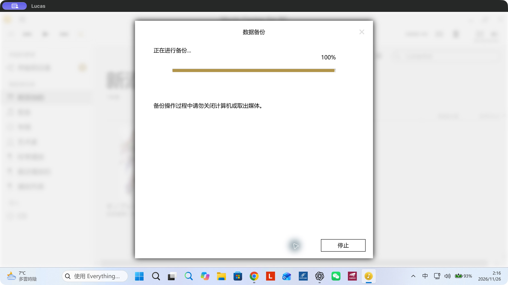
capture/01-backup/16-backup-progress-100-filled.jpg
baseline 实际备份执行页：100%，金色进度条填满，尚未切换完成页。
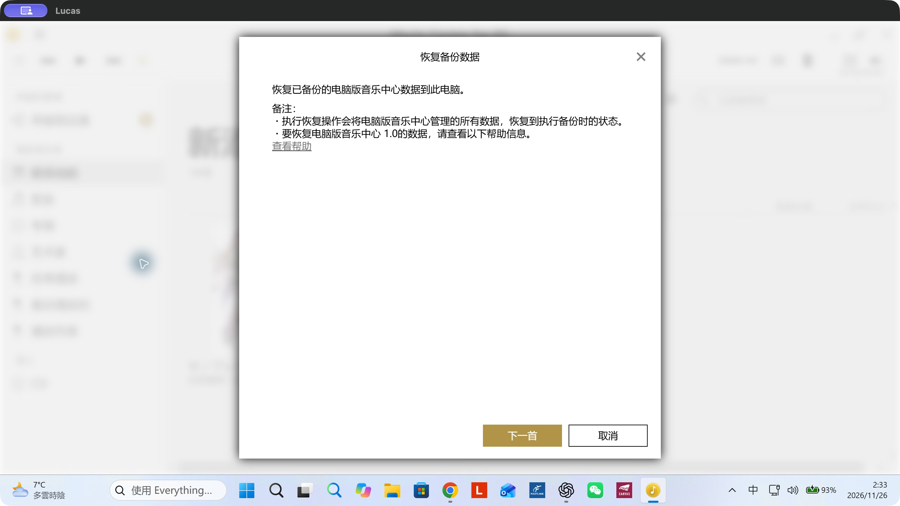
capture/02-restore/01-entry.jpg
恢复备份数据入口：本轮选择刚完成的 baseline 备份。

capture/02-restore/02-select-backup-empty.jpg
恢复数据选择页：备份路径、备份日期、备注及两种恢复地址。

capture/02-restore/03-invalid-backup-directory.jpg
路径验证错误：选择 baseline 的父目录后提示“无法查找备份数据。请选择正确的文件夹。”尚未执行恢复。
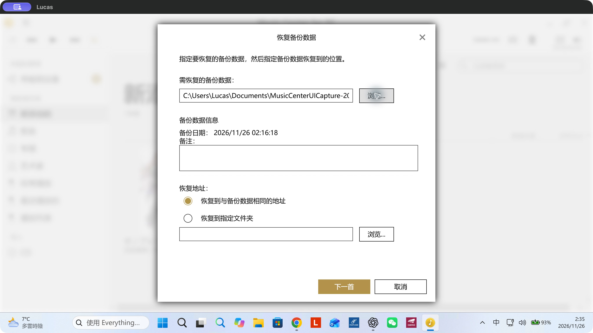
capture/02-restore/04-valid-backup-metadata.jpg
本轮 baseline 备份已被原版成功解析，备份日期 2026/11/26 02:16:18；恢复到原地址。

capture/02-restore/05-ready-to-start.jpg
真实恢复最终准备页：baseline 备份恢复到原地址。尚未点击开始，因将把全部管理数据恢复到备份时状态，需要执行时确认。
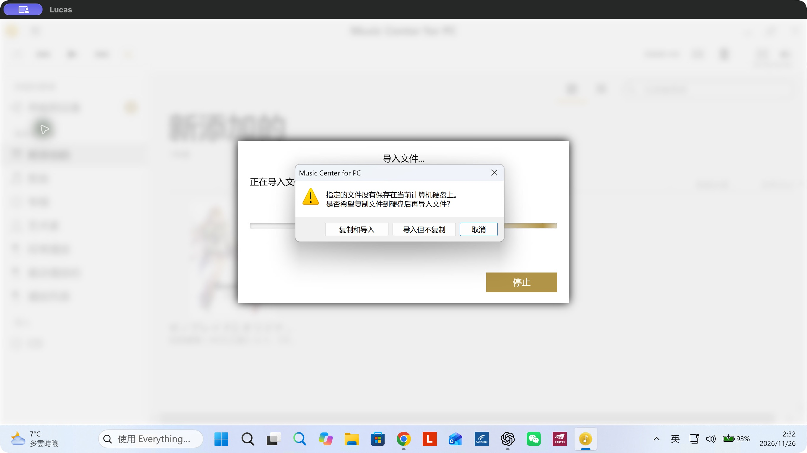
capture/03-atrac/01-sample-import-copy-choice.jpg
公开 OMA 样例导入时，Windows 原版提示复制到硬盘再导入；尚未开始转换。
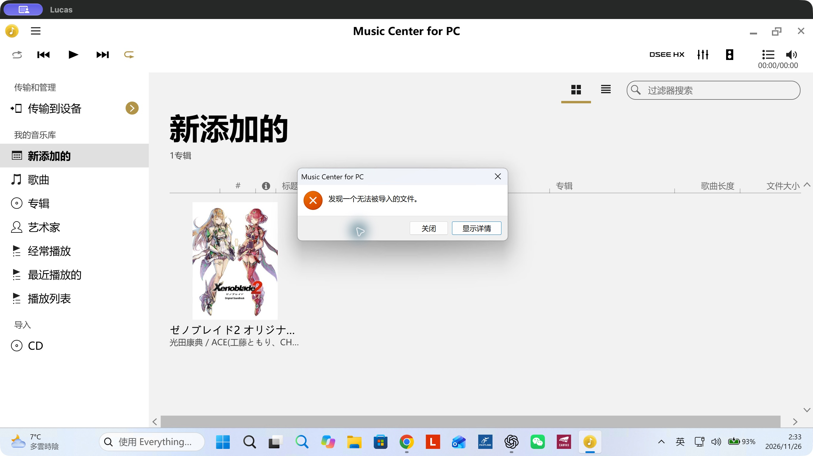
capture/03-atrac/02-sample-import-failed.jpg
FFmpeg 03-Exdous (1).oma 导入失败；这不是 ATRAC 转换结果页。
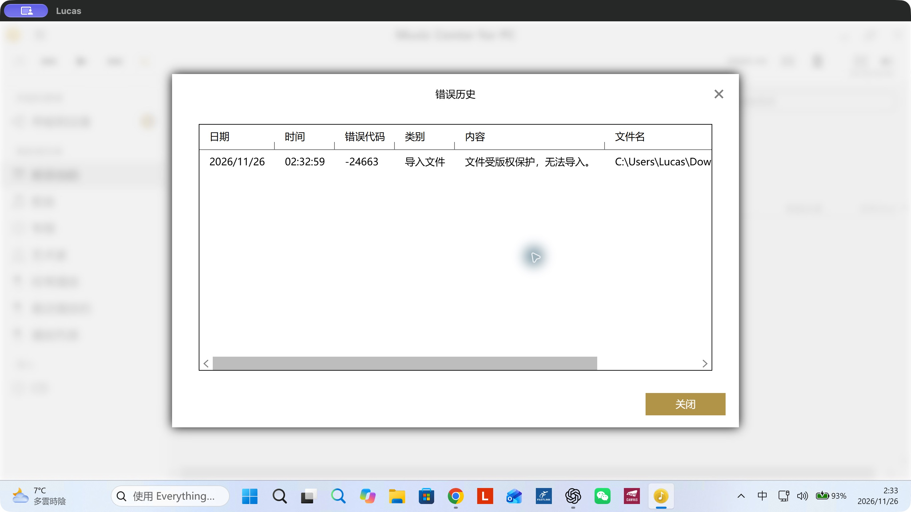
capture/03-atrac/03-sample-import-error-detail.jpg
错误历史：-24663，文件受版权保护，无法导入。公开 OMA 样例未进入曲库，不能据此采集有文件的转换流程。
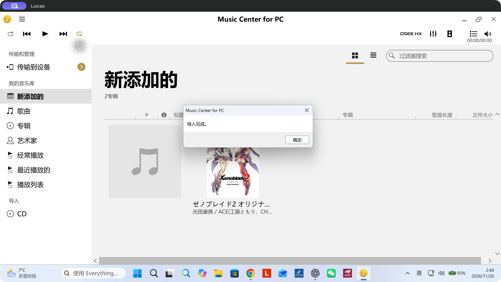
capture/03-atrac/04-sample-import-completed.jpg
FFmpeg ATRAC3plus at3p_sample1.oma 复制并导入成功；新增测试专辑，原曲库备份此前已完成。

capture/03-atrac/05-entry-with-sample.jpg
ATRAC 批量转换入口，曲库现含一个成功导入的 ATRAC3plus 测试文件。
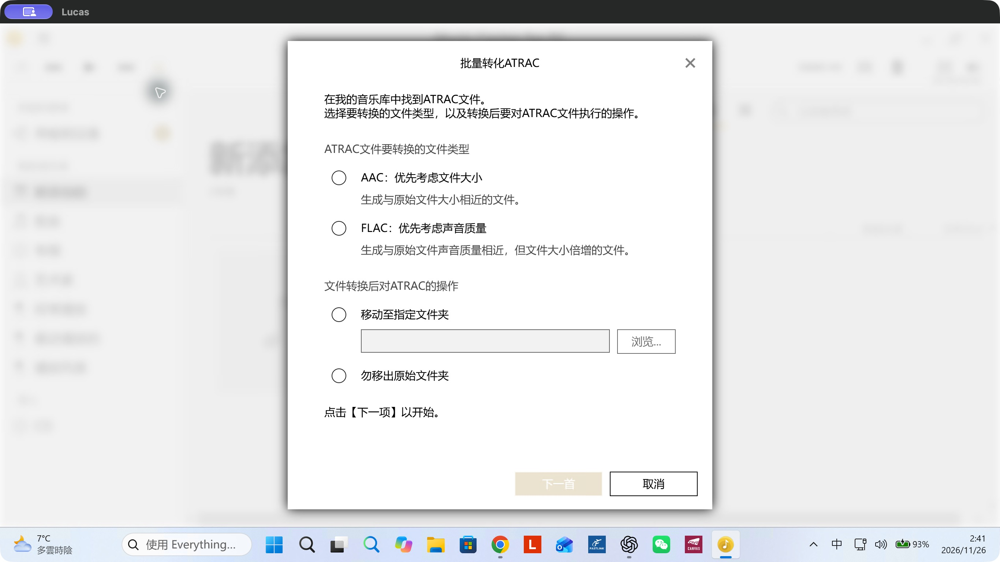
capture/03-atrac/06-files-found-options-empty.jpg
找到 ATRAC 后的原版选项页：AAC / FLAC；原文件移动到指定文件夹 / 勿移出原始文件夹。初始未选择。

capture/03-atrac/07-aac-keep-original.jpg
AAC 选中，原 ATRAC 文件选择勿移出原始文件夹；下一项可用。

capture/03-atrac/08-flac-keep-original.jpg
FLAC 选中，原 ATRAC 文件保留原文件夹；无单独码率下拉控件。
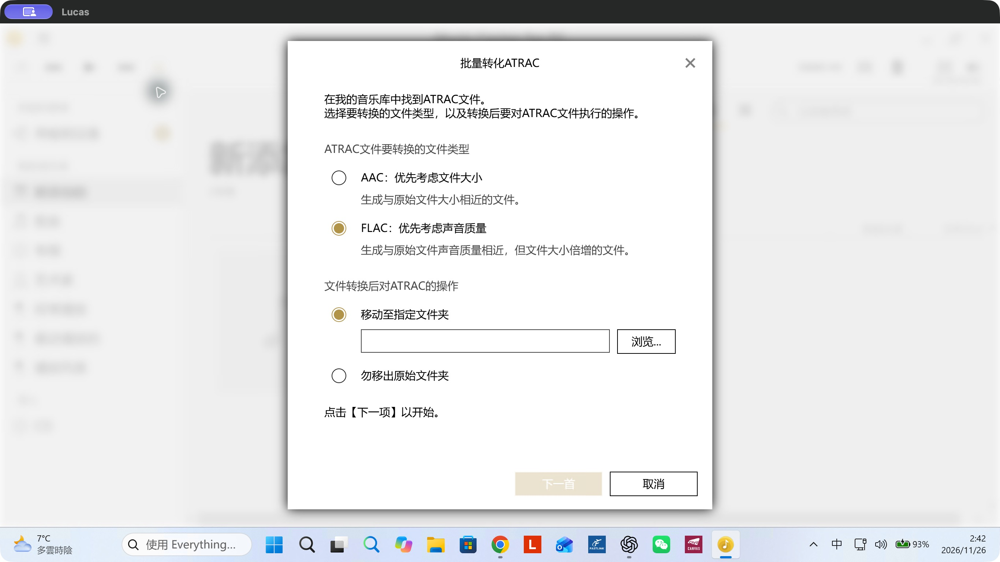
capture/03-atrac/09-move-original-controls-enabled.jpg
仅选择移动原文件选项以展示路径框和浏览按钮；未执行移动。
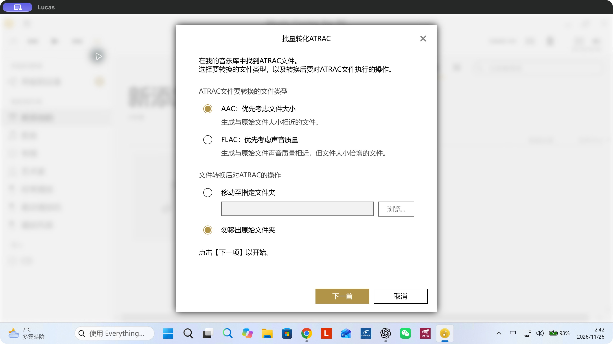
capture/03-atrac/10-ready-aac.jpg
AAC 与保留原文件已选中；下一项进行空间计算，尚未实际转换。
capture/03-atrac/11-space-check-ready-to-start.jpg
原版完成磁盘空间计算后的最终开始页，当前及转换后可用空间 76.7GB；尚未实际转换。
capture/03-atrac/12-aac-completed.jpg
实际 AAC 转换成功，原版显示“文件转换完成。”原 ATRAC 文件选择保留原位。
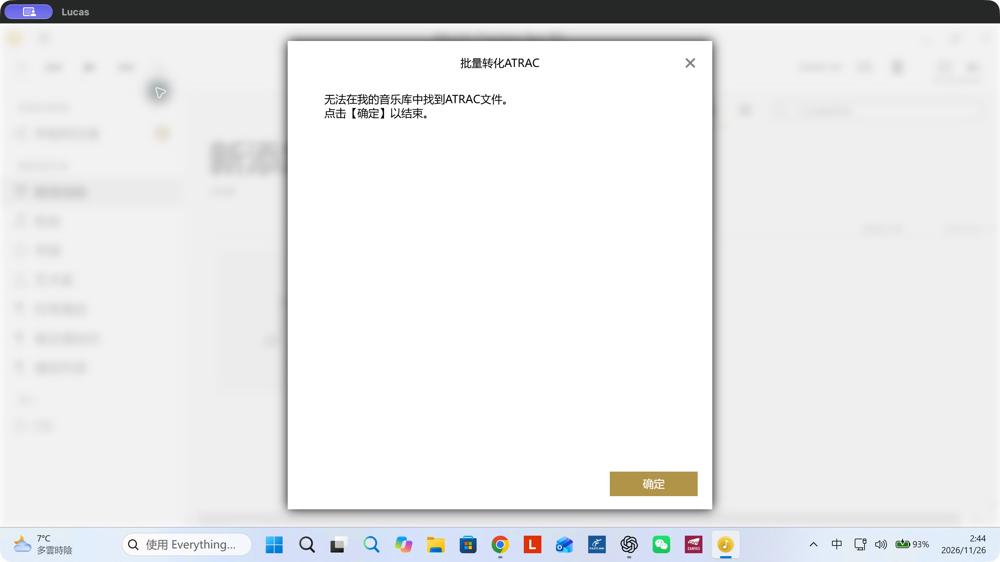
capture/03-atrac/13-after-aac-no-atrac-in-library.jpg
AAC 转换完成后再次扫描，原版曲库中已无 ATRAC；此截图不证明磁盘原文件已删除。
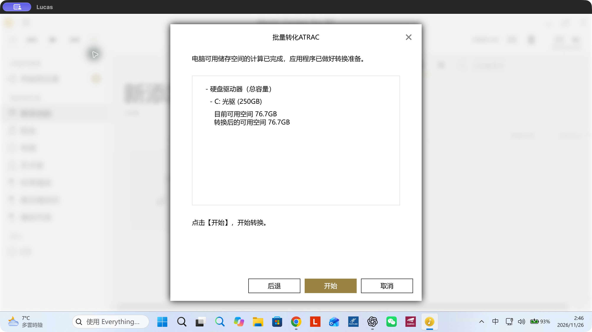
capture/03-atrac/14-flac-ready-to-start.jpg
第二轮实际转换：FLAC、原文件保留原位；磁盘空间计算完成后的开始页。
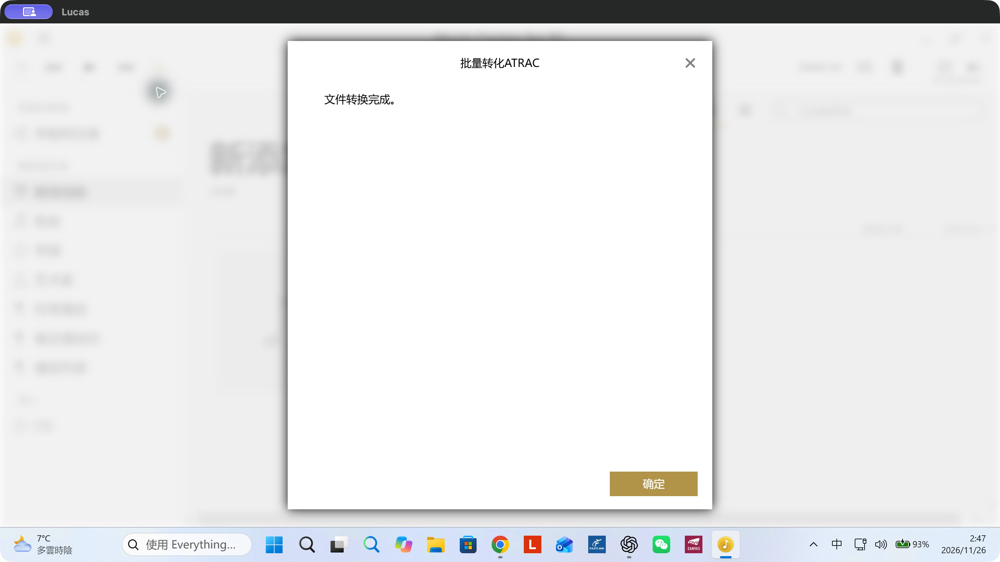
capture/03-atrac/15-flac-completed.jpg
第二次测试实际 FLAC 转换成功，原版显示“文件转换完成。”

capture/03-atrac/16-flac-progress-100-unfilled.jpg
实际 FLAC 转换执行页：正在转换文件，显示100%，金色填充尚未出现，停止按钮可见。
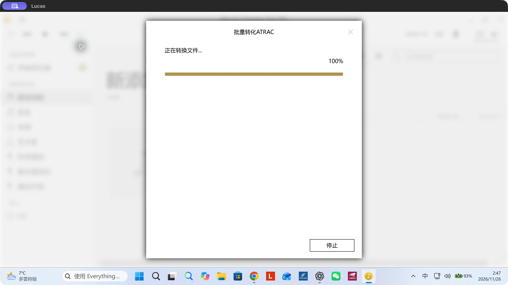
capture/03-atrac/17-flac-progress-100-filled.jpg
实际 FLAC 转换执行页：100%，金色进度条已填满，尚未切换完成页。
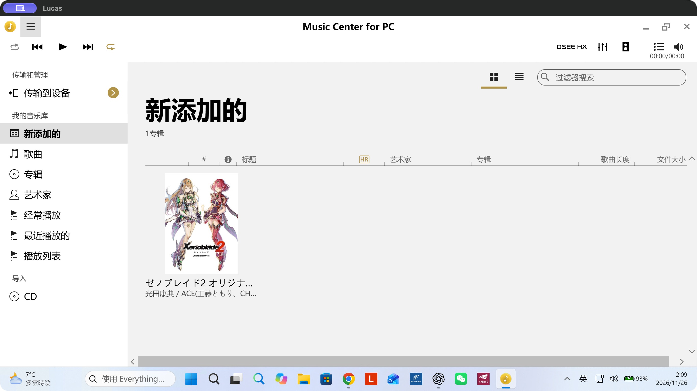
capture/baseline.jpg
采集前原版曲库状态